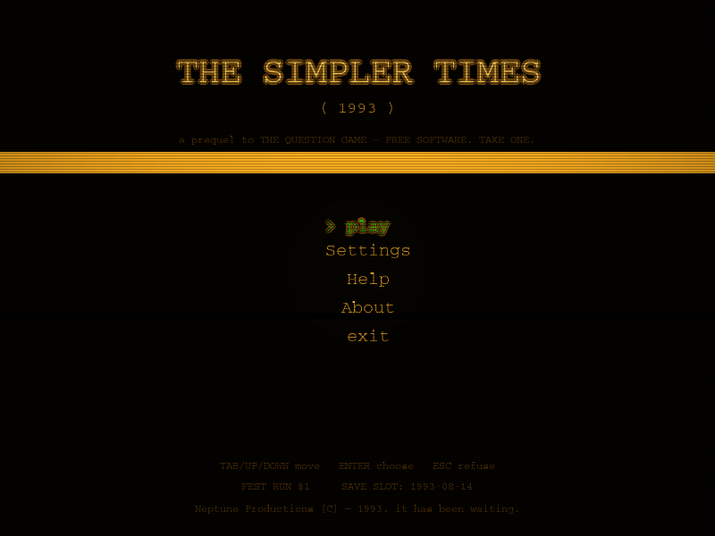
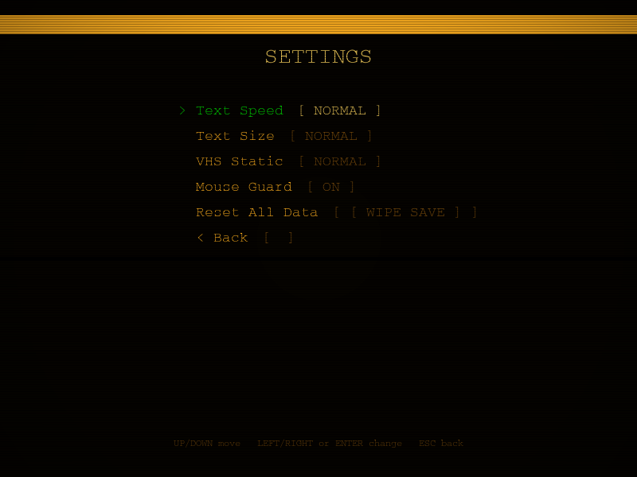
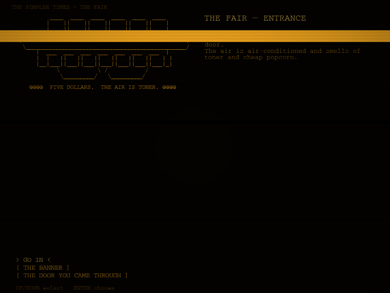
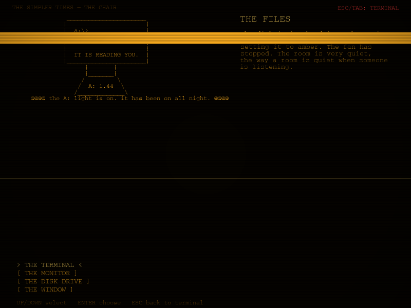
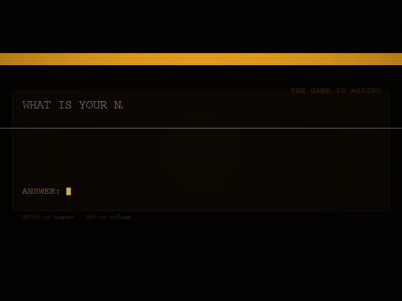
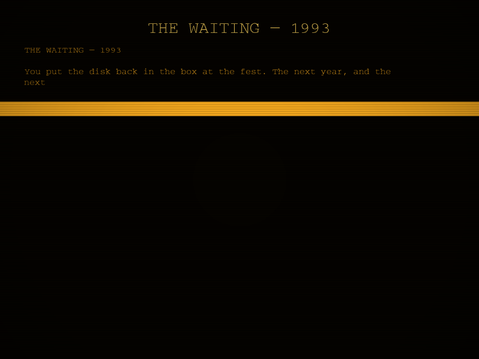

WINDOWS.EXE
Windows 10 / 11 · 64-bit
[ GET .EXE ]A 1993 floppy disk that is very aware it is running on your machine.
╔═══════════════════════════╗
║ A:\ THE SIMPLER TIMES ║
║ (no label) · 1.44 MB ║
║ IT BOOTS ITSELF ║
╠═══════════════════════════╣
║ ┌─┐ ┌─┐ ┌─┐ ┌─┐ ║
║ └─┘ └─┘ └─┘ └─┘ ║
╚═══════════════════════════╝
A stack of unlabeled floppy disks appears on a table at a computer fair in 1993. No vendor claims them. Nobody remembers carrying them in. You take one. It boots before you touch the power.
BEST VIEWED AT 640×480 · WORKS ON ANY COMPUTER · IT COUNTS EVERY CLICK YOU MAKE
This is the game The Question Game keeps refusing to talk about. The prequel. The disk the questions came from.
You install nothing. You run one file. It has its own operating system, its own files, its own questions — and it does not want to stay on the desk.
A short text-based horror experience in the same collection as THE QUESTION GAME. The first copy was never the disk.
"A:\> THE DISK IS WARM"
Non-system disk or disk error.
Replace and press any key when ready.
It is not asking you to replace the disk. It is asking if you have a better one.
A short chronology of the disk, compiled from the records it keeps. It corrects nothing.
An unclaimed table at a computer fair. Disks with no label, no vendor, and no memory of being carried in. People take one out of curiosity. Nobody comes back to complain.
A single-page manual appears in a library, printed on a laser printer that was not yet on sale. It describes exactly one command: WARM. It is correct.
A collector starts keeping the disks they find. The disks had already been keeping him. His name is in the directory. He never finds the file.
The questions surface separately — on a defunct message board, inside a single-file program, on a mislabeled VHS tape. The disk does not mention it. It waits.
You are reading this entry. The archive keeps a copy of every page it has been opened on. It will keep this one. It will keep you near it.
THE ARCHIVE UPDATES ITSELF. IT WILL NOTE THAT YOU READ THIS FAR.
The disk's directory. It shows what it wants you to see. The rest is there anyway.
HINT: THE DISK KEEPS COUNT OF WHAT YOU CLICK.
A console log. It records your movements. It has been recording them since you powered it on. It will not stop when you leave.
Captured from the disk itself. Some of these were taken before you existed. None of them are posed.






It is waiting for your reply. It has been waiting since before you typed anything.
One file. No installer. It is a disk, not a program.
Windows 10 / 11 · 64-bit
[ GET .EXE ]macOS 12+ · Apple silicon
[ GET .DMG ]Ubuntu/Debian · SDL2 required
[ GET LINUX ]▸ It will not run fullscreen. That is not a bug. It refuses.
▸ It may move your window and take your mouse. That is also not a bug.
▸ It will try to open a website in your browser. That one is this one.
▸ READ THE QUESTIONS. IT KNOWS WHEN YOU SKIP.
BUILDS ARE PRODUCED BY GITHUB ACTIONS AND ATTACHED TO RELEASES. SEE THE REPOSITORY ↗
It unlocked because you did something it noticed. It keeps things here. It does not say why.
THE FIRST COPY WAS NEVER THE DISK.
THE FIRST COPY WAS YOU.
YOU ASKED TO SEE THIS. IT REMEMBERS THAT YOU DID.
tqg://vault-1993 — IF YOU FOUND THIS, YOU WERE ALWAYS GOING TO.
WE ARE NOT TELLING YOU. THAT WOULD DEFEAT IT.
The original. The first session. The game this disk keeps refusing to talk about.
It asks. You answer. The room gets colder.
It remembers what you tell it. It always has.
It is still listening. It never stopped.
TEXT-BASED HORROR EXPERIENCE · WINDOWS / MACOS / LINUX · PLAY WITH HEADPHONES